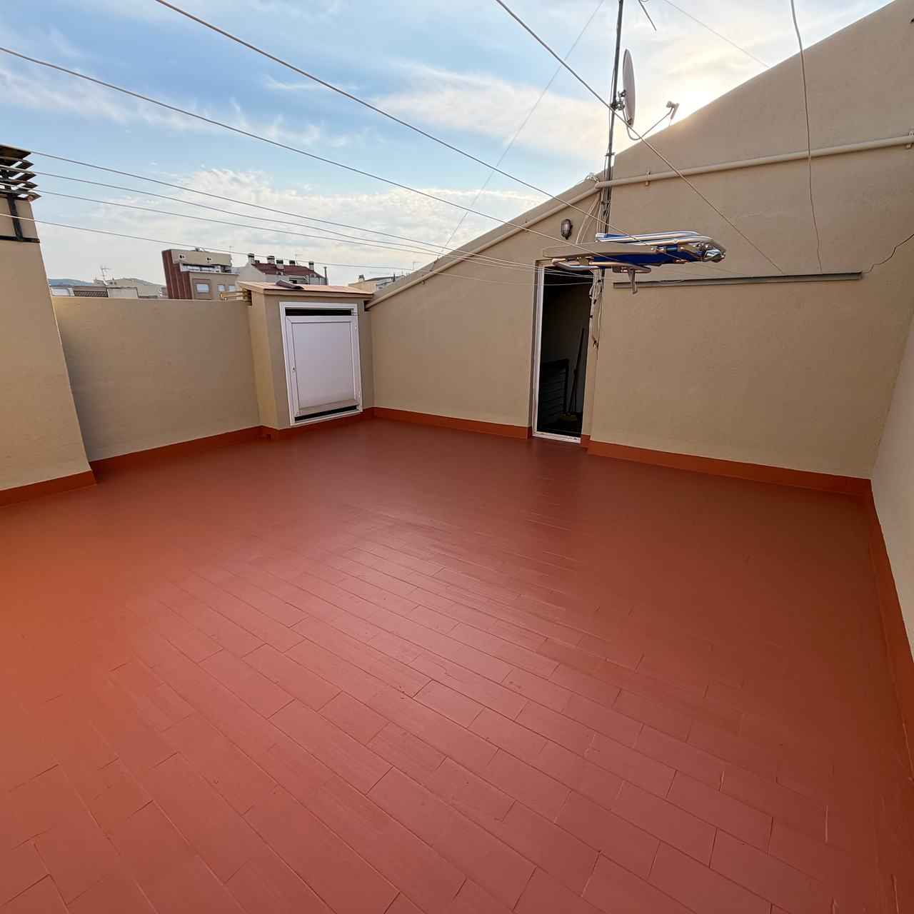
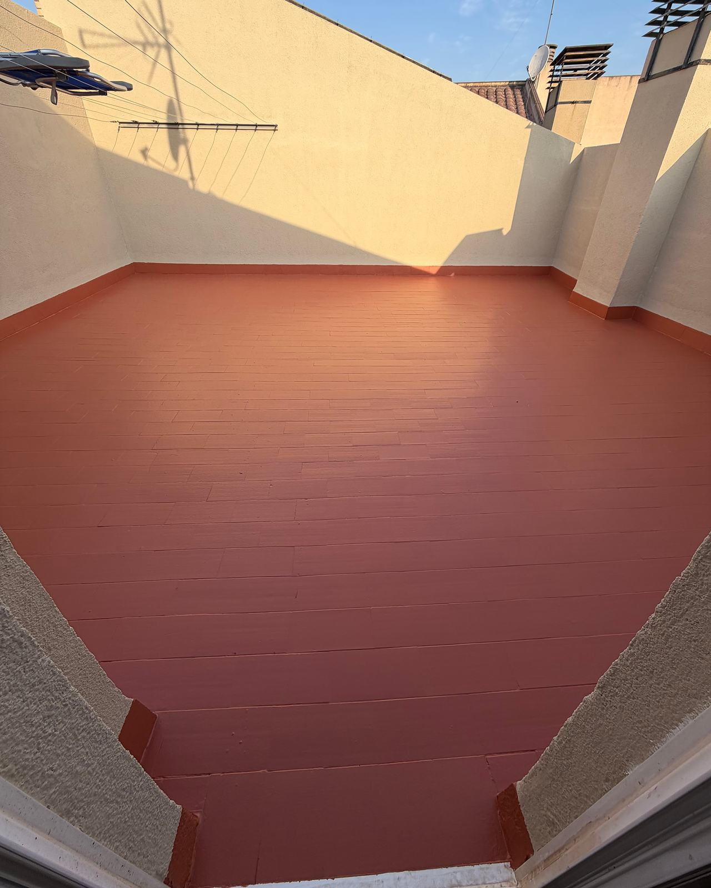

Terrazas y azoteas que dejan de filtrar
Impermeabilización con poliuretano líquido en Terrassa y el Vallès. Una membrana continua, sin solapes, que se aplica en líquido y llega a donde casi siempre entra el agua: sumideros, petos, esquinas y umbrales.

El agua entra por los bordes
En una terraza, el centro rara vez es el problema. El agua aprovecha los encuentros: donde el suelo se junta con la pared, donde hay un sumidero o donde un anclaje atraviesa la impermeabilización.
Encuentro con petos y muros
La membrana sube por la pared con una media caña, para que no haya un ángulo vivo que se abra.
Sumideros y gárgolas
Se limpian, se revisa la pendiente y la membrana entra dentro del desagüe, no se queda en el borde.
Juntas y fisuras
Se abren, se sellan con material elástico y se refuerzan con malla antes de la membrana.
Umbrales, anclajes y barandillas
Los puntos donde algo atraviesa o toca el suelo se tratan uno a uno.

Poliuretano líquido, en continuo
Se aplica a rodillo o con máquina, en varias capas, y forma una membrana elástica adherida al soporte. Al no tener piezas ni solapes, no hay costuras por donde se cuele el agua.
- Material
- Impermeabilización Mamper, poliuretano líquido 100 %
- Soporte
- Sobre la baldosa existente si está firme, o sobre mortero
- Uso
- Terrazas transitables, azoteas comunitarias y cubiertas planas
- Acabado
- Capa de protección en color; antideslizante en zonas de paso
Terrazas en una sola pieza
Terrazas con revestimiento continuo en rojo óxido, con media caña en los encuentros, y una cubierta plana con membrana gris de poliuretano líquido. Pulsa una foto para verla grande.
De la mancha a la terraza seca
Visita
Vemos la terraza y, si se puede, la mancha del piso de abajo. Comprobamos pendientes, sumideros y el estado de la baldosa.
Propuesta
Qué se repara, qué sistema se aplica y en cuántos días, con la previsión del tiempo: con lluvia no se impermeabiliza.
Ejecución
Limpieza, reparación de fisuras y piezas sueltas, imprimación, refuerzo de puntos críticos y capas de membrana.
Entrega
Revisión contigo y consejos de mantenimiento: sumideros limpios y cuidado con macetas y muebles que puedan perforar la membrana.
Sobre impermeabilizar terrazas
¿Hay que levantar la baldosa?
Muchas veces no. Si la baldosa está firme, la membrana se aplica encima tras una buena limpieza e imprimación. Si hay muchas piezas huecas o el agua está ya bajo el pavimento, hay que valorarlo en la visita.
¿Se puede pisar la terraza después?
Sí, es un sistema transitable una vez curado. El tiempo de curado depende del producto y de la temperatura; te lo decimos antes de empezar.
¿Lo hacéis en azoteas de comunidad?
Sí. En comunidades preparamos el diagnóstico y el presupuesto por partidas para la junta, como en las fachadas.
¿Y si la terraza es de una nave o de gran superficie?
El sistema es el mismo; cambia la organización. Lo explicamos en impermeabilización de cubiertas de nave.
¿Dónde aparece la mancha?
Mándanos fotos de la terraza (sumideros y encuentros con las paredes incluidos), de la mancha del piso de abajo y los metros aproximados.